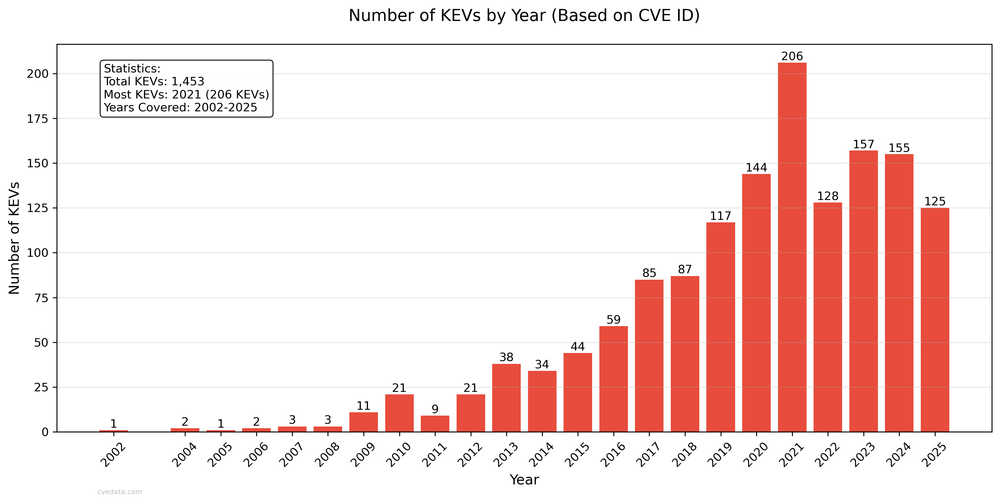
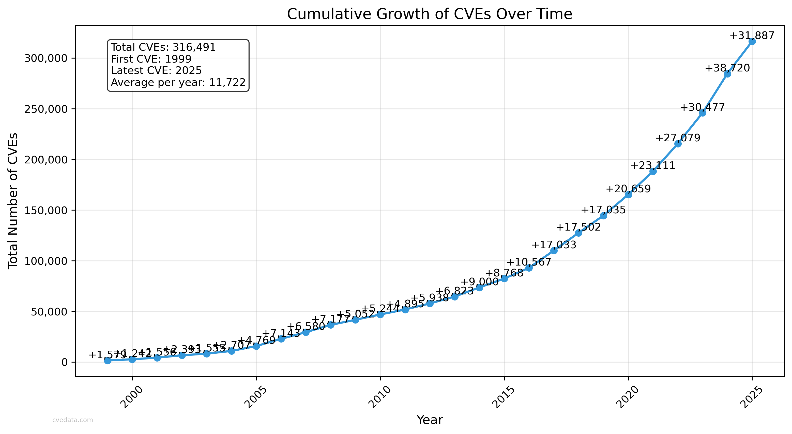
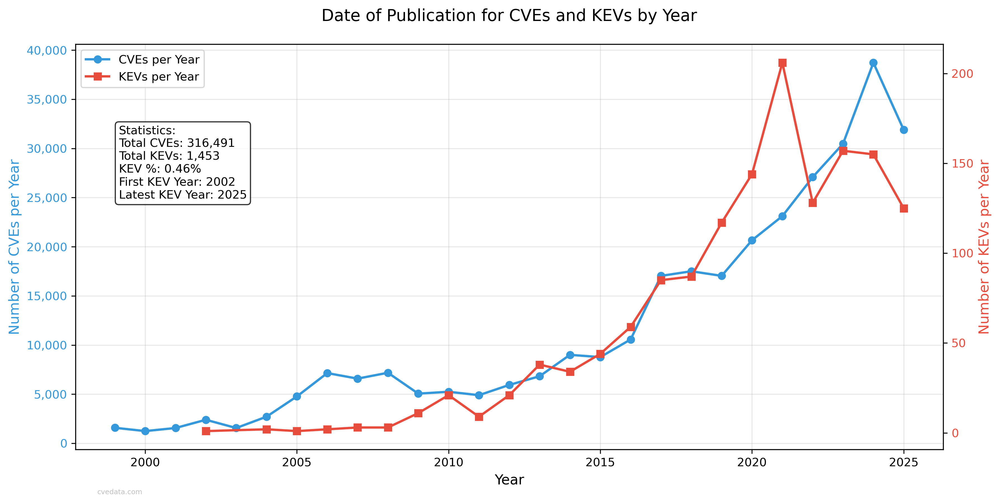
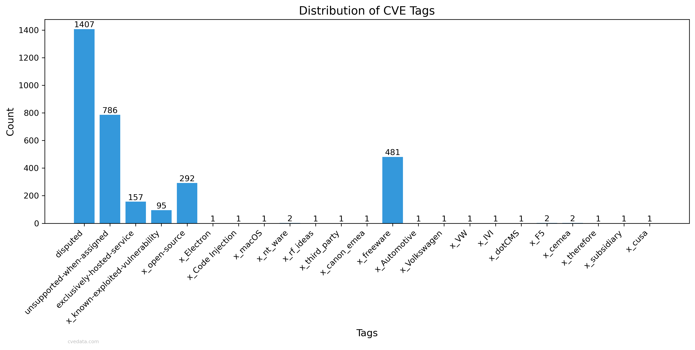
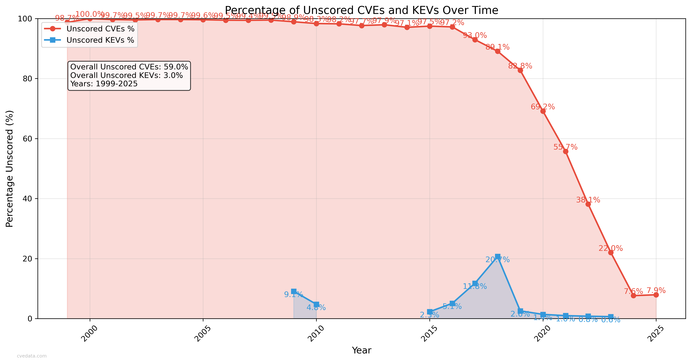
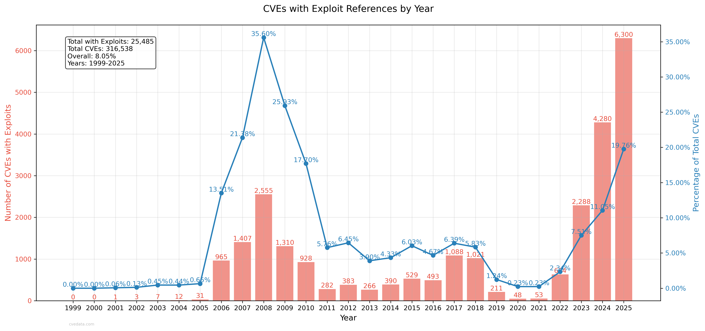

CVEdata.com
This report provides a comprehensive analysis of Common Vulnerabilities and Exposures (CVE) and Known Exploited Vulnerabilities (KEV).
CVE Scoring Coverage

Illustrates the proportion of CVEs that have been assigned CVSS scores versus those that
remain unscored, providing insight into the completeness of vulnerability scoring.
Average CVSS Score Trends
Shows the evolution of average CVSS scores over time for all CVEs,
helping identify if vulnerabilities are becoming more or less severe on average.
Average KEV CVSS Score Trends
Displays the trend of CVSS scores specifically for Known Exploited Vulnerabilities (KEVs),
showing how the severity of actively exploited vulnerabilities has changed over time.
Severity Distribution (Stacked)

Shows the relative distribution of severity levels as percentages over time,
with each severity level stacked to show the complete composition for each year.
Severity Trends

Displays trend lines for each severity level over time, showing how the proportion
of different severity levels has evolved and identifying long-term patterns.
KEV Distribution in Total CVE Population

Shows what percentage of all CVEs are included in the KEV catalog, highlighting how
selective the KEV list is compared to the total CVE population.
Score Distribution Comparison

This comparison shows the CVSS score distribution between KEV entries and all CVEs,
highlighting how KEV vulnerabilities' severity compares to the general CVE population.
CVSS Score Mathematical Probability for CVSS 2.0

This visualization shows the theoretical distribution of all possible CVSS 2.0 base scores based on the scoring formula.
It helps understand which scores are mathematically more likely to occur based on the CVSS calculation algorithm.
CVSS Score Distribution compared to CVSS Score Mathematical Probability For CVSS 2.0

This comparison shows the CVSS score distribution between the theoretical probabilistic distribution and the actual distribution for CVSS 2.0.
CVSS Score Mathematical Probability for CVSS 3.x

This visualization shows the theoretical distribution of all possible CVSS 3.x base scores based on the scoring formula.
It helps understand which scores are mathematically more likely to occur based on the CVSS calculation algorithm.
CVSS Score Distribution compared to CVSS Score Mathematical Probability For CVSS 3.x

This comparison shows the CVSS score distribution between the theoretical probabilistic distribution and the actual distribution for CVSS 3.x.
CVSS Score Mathematical Probability for CVSS 4.0

This visualization shows the theoretical distribution of all possible CVSS 4.0 base scores based on the scoring formula.
It helps understand which scores are mathematically more likely to occur based on the CVSS calculation algorithm.
CVSS Score Distribution compared to CVSS Score Mathematical Probability For CVSS 4.0

This comparison shows the CVSS score distribution between the theoretical probabilistic distribution and the actual distribution for CVSS 4.0.
Critical CVE Distribution compared to KEV
Shows the proportion of critical CVEs (CVSS score ≥ 9.0) that are included in the KEV catalog
versus those that are not, helping understand the relationship between severity and exploitation.
KEVs by Year

Shows the distribution of Known Exploited Vulnerabilities by the year of their
corresponding CVE ID, indicating trends in vulnerability exploitation over time.
CVSS Score Distribution in KEV List

This bar chart shows the distribution of CVSS scores across different severity levels
(Critical, High, Medium, Low, and Unused) within the Known Exploited Vulnerabilities (KEV) catalog.
Percentage Distribution of CVSS Scores
A pie chart showing the percentage breakdown of CVSS scores by severity level in the KEV list,
providing a clear view of the proportion of vulnerabilities at each severity level.
CVE Publication Delays

Distribution of time delays between CVE reservation and publication dates, showing the
typical lifecycle of vulnerability disclosure.
CVE Publication Delays (Log Scale)

Log-scale view of publication delays, better highlighting the distribution of both short
and long delays in the vulnerability disclosure process.
CVE Growth Over Time

Shows the cumulative growth of CVEs over the years, illustrating the increasing pace
of vulnerability discovery and disclosure.
CVE and KEV Growth Comparison

Compares the growth rates of CVEs and KEVs over time, showing how the actively exploited
vulnerability landscape has evolved compared to overall vulnerability discoveries.
CVE Tag Distribution

Shows the distribution of different tags used in CVE records, providing insight into
the various categories and attributes of vulnerabilities.
Disputed CVEs by Year

Tracks the number of disputed CVEs over time, showing trends in vulnerability
contestation and verification processes.
Unscored CVEs by Year

Shows the number and percentage of CVEs without CVSS scores for each year,
helping identify trends in scoring coverage and potential gaps in vulnerability assessment.
Unscored KEVs by Year

Displays the number and percentage of Known Exploited Vulnerabilities (KEVs) that lack
CVSS scores, highlighting potential gaps in severity assessment for actively exploited vulnerabilities.
Unscored Vulnerabilities Comparison

Compares the number of unscored CVEs and KEVs over time, showing the relationship
between general vulnerability scoring coverage and that of known exploited vulnerabilities.
Percentage of Unscored Vulnerabilities

Shows the percentage of unscored CVEs and KEVs over time, providing a normalized view
of scoring coverage trends between general vulnerabilities and known exploited ones.
CVSS Versions Over Time

Shows the distribution of CVSS versions over time, providing insight into the evolution of vulnerability scoring standards.
Severity Trends
Shows trends in the number of CVEs across different severity levels over time.
Rejected CVEs Over Time

Shows both the absolute number and percentage of CVEs that were rejected each year,
helping track the evolution of CVE rejection patterns over time.
Actively Exploited CVEs Over Time
Shows both the absolute number and percentage of CVEs marked as actively exploited each year,
helping track the evolution of exploitation patterns over time.
CVEs with Exploit References Over Time

Shows both the absolute number and percentage of CVEs that have references tagged as exploits,
indicating the prevalence of publicly documented exploit code over time.
Compiled by Robert "
RSnake" Hansen. I in no way claim ownership of any of the data or images and disclaim the reliability of the data used or how it has been processed or represented in this report. Use your own judgement and do your own research.
Report generated on: 2025-02-25 13:37:28